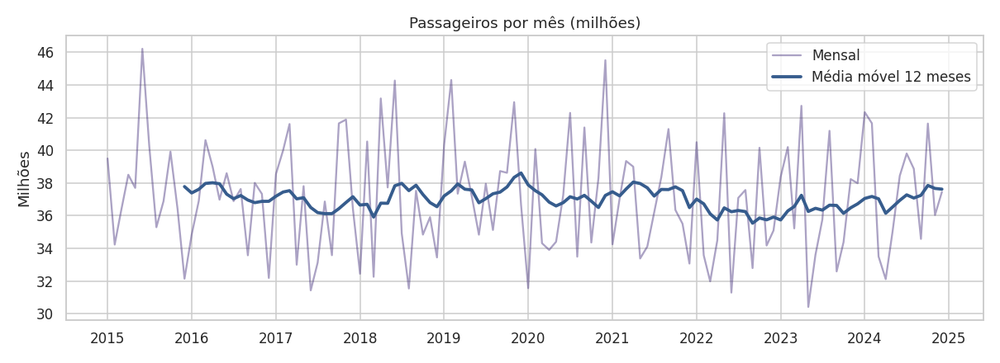
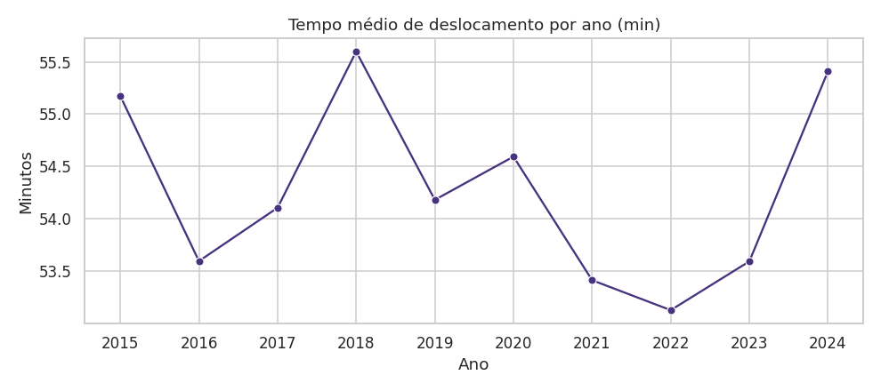
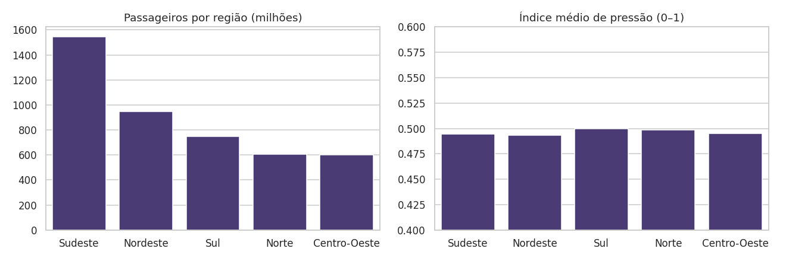
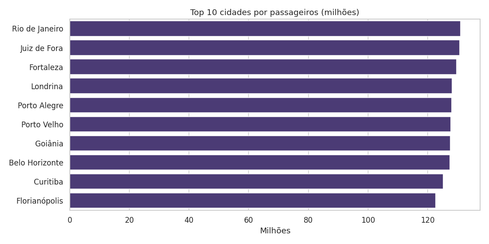
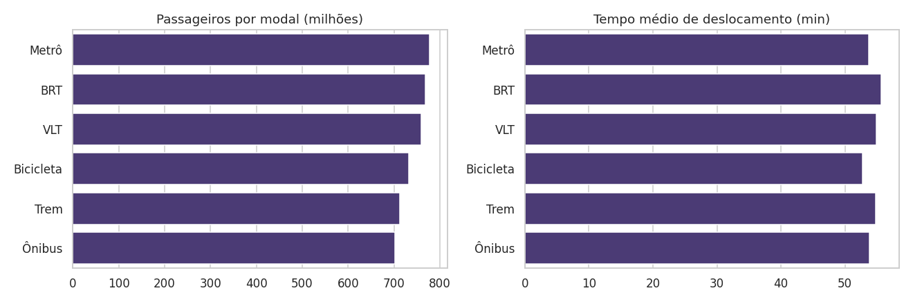
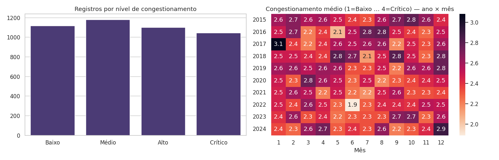
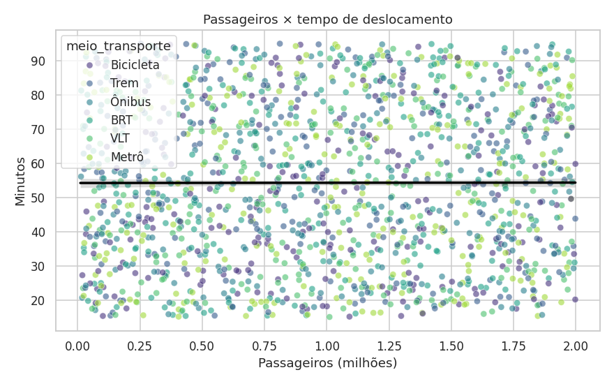
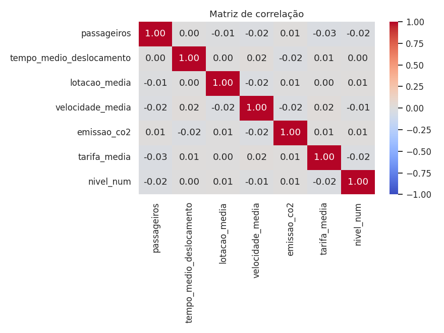

O problema
A mobilidade urbana afeta a qualidade de vida, a produtividade e o meio ambiente. Este projeto analisa um dataset simulado de 37 cidades brasileiras, com 6 meios de transporte e 120 meses de observações, para investigar fluxo de passageiros, tempo de deslocamento, congestionamento e emissões.
Perguntas orientadoras
- Quais cidades possuem maior fluxo de passageiros?
- Quais períodos apresentam maior congestionamento?
- Qual meio de transporte é mais utilizado?
- O tempo médio de deslocamento aumentou ao longo do tempo?
- Existem diferenças regionais relevantes?
- Há relação entre passageiros e tempo de deslocamento?
- Quais regiões apresentam maior pressão sobre o sistema de mobilidade?
Principais indicadores
4,45 bilhõesPassageiros no período
Rio de JaneiroCidade mais movimentada
MetrôMeio predominante
54,3 minTempo médio de deslocamento
R$ 5,76Tarifa média
2,47 / 4Congestionamento médio
Visualizações








O que os dados mostram
- Cidades e modais têm totais muito próximos: o líder se destaca por margem pequena.
- O tempo médio de deslocamento oscila entre 53 e 56 minutos, sem tendência de aumento.
- Por cidade, as regiões ficam entre 119 e 125 milhões de passageiros; a diferença nos totais vem do número de cidades por região.
- As correlações entre as variáveis numéricas são próximas de zero, inclusive entre passageiros e tempo de deslocamento.
Conclusão: como o dataset é simulado, os resultados servem como exercício metodológico. Para identificar gargalos reais, seria preciso incluir população, horário do dia e fontes oficiais (IBGE, ANTP).